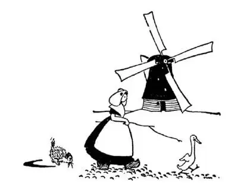
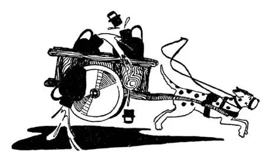

30
The Land Below the Sea
低于海平面的国家

BELLS and Battle-fields don’t seem to go together, but north of France is a land of Bells and Battle-fields, called Belgium.
The bells are in the towers of churches, of town halls, and of other buildings. The bells in Belgium strike the hour, but they do more than that—they play a tune every hour or oftener. And on Sundays and holidays a bell-ringer, seated at a keyboard as at an organ, plays all sorts of hymns and tunes on the bells, so that every one in the town can enjoy the music without leaving his own home. The music is broadcast without a radio. Some of the bell sets have as many as fifty bells of different sizes and sounds—little bells that make high notes, and big bells, as big as a man, that make deep, low notes. The bells themselves don’t move; the bell clapper moves instead. The clappers are fastened by wire to keys like those of a piano or organ, and as the player touches the keys the clappers strike the side of the bell. When a bell concert is being given, all noises in the streets near-by are forbidden—no honking of horns nor loud shouting allowed—so that nothing will spoil the music for those who are listening.
Bells and Battle-fields! Belgium has been the battle-field of Europe—not battles fought by the Belgians themselves, but by other countries of Europe. In the two World Wars Belgium was a chief battle-ground of the French and German soldiers, and thousands of buildings were wrecked and an immense amount of damage done. A little over a hundred years ago a great French General named Napoleon, who I told you was buried in Paris, fought one of the greatest battles in history at a place in Belgium called Waterloo. Napoleon was beaten at Waterloo, and beaten so badly that we now use the word “Waterloo”to describe almost any big defeat, whether it is a defeat of an army in battle or of a team in a game. We say “A tennis champion has his Waterloo” or “A football team has its Waterloo.”
B. B. B. The capital of Belgium also begins with a “B.”It is Brussels. Perhaps you have heard of Brussels lace, Brussels carpets, or Brussels sprouts. They all come from Brussels.
Another city of Belgium beginning with a “B” is Bruges. Bruges has many streets of water with bridges crossing them, and boats instead of carts, although there are paved streets also. See how many things in Belgium begin with a “B:”
Belgium
Bells
Battle-fields
Brussels
Bruges
Bridges
Boats
Belgium is hilly on the side near France, but on the opposite side it is very low. On this low side it joins the land of the Dutch people, which is called Holland. Holland means “hollow land,” and it is so named because in many places it is even lower than the sea. Banks or walls called dikes had to be built to hold the water back, and windmills with big sprawling wings had to be built inside the dikes to pump the water out and keep it out. Water won’t run off the ground in Holland, for there is no low place for it to run to; it would have to run uphill. So it has to be pumped off.
The dikes that hold back the sea have to be very big and very strong to stand the pounding of the waves against them, for the slightest break or hole in the dike would soon burst open and the water would flood the country, and cover houses and drown the people, so they have men to watch the dikes all the time to mend any broken places as soon as they are made.
But long, long ago—about seven hundred years ago—there was a terrible storm, and the North Sea did break through and it drowned thousands upon thousands of people and the villages and houses in which they lived. Ships now sail and fish now swim where these drowned villages lie, and this inland water is called the South Sea, which in Dutch is the Zuyder Zee. But the Dutch people are planning to build dikes and shut off the North Sea once again and pump the water out. This will make dry land where the Zuyder Zee now is; so some day, not many years from now, there will be no Zuyder Zee, no South Sea, and where fish now swim and ships now sail will be houses and farms.

Windmills with big sprawling wings were built to pump the water off the land
建起伸着大翅膀的风车把水抽出去
Where we have roads and streets, in Holland they have canals. In the summer, boats sail on the canals and in the winter the people skate on them. Children skate to school and men skate to work. What fun!
In Holland they don’t have many horses; they use dogs to haul and bicycles to carry. Dogs eat less than horses, they don’t have to have stables, and bicycles don’t have to have garages. Dogs can be trained like horses to haul small carts, large enough to carry milk cans. Sometimes, however, when a cat comes along, there is trouble.
Though there are few horses in Holland, there are many cows. They have black and white cows called Holsteins. Holstein cows give a great deal of milk, more milk than any other kind of cow. The milk is used for making cheese, for which Holland is famous. The cheese is made in big pieces and then varnished so that it will keep a long time. They have markets in which nothing but cheese is sold—cheese markets.

Sometimes when a cat comes along there is trouble
有时候猫出现了，这就有麻烦了
The Dutch keep their houses very clean. The kitchen is usually the living-room and dining-room too. They scrub and scrub and scrub, outside as well as inside, even the sidewalks, and in some towns even the street. The cow sheds are often part of the house and are kept just as clean as the houses, with white curtains at the windows, and hooks to hold up the tails of the cows while they are being milked. People wear wooden shoes, because Holland is such a damp country, and they take them off and leave them at the door, as we do overshoes, before entering the house. In some places in Holland the men wear trousers as big as pillow-cases and the girls wear very big skirts and white bonnets. In the large cities, however, the people dress about the same as we do.
Dam means a dike, and as there are so many dikes in Holland there are many towns’ and cities’ names ending in “dam.” Amsterdam and Rotterdam are the two largest cities.
Amsterdam is a city of diamonds. The diamonds are not found in Holland but are brought there from Africa. When they are taken out of the diamond mines in Africa they don’t look like diamonds but look like pebbles, and you would never guess they could be made into anything beautiful. But at Amsterdam they are made into the beautiful sparkling jewels that we know. A diamond is the hardest thing in the World. You cannot cut it with a steel tool nor grind it on a grindstone; you cannot scratch it with sandpaper nor make a mark on it with a file. The only thing that will cut a diamond or scratch a diamond is another diamond. So in Amsterdam they chip one diamond with another diamond and polish it into a many sided jewel with diamond dust.
【中文阅读】
钟和战场似乎并不匹配，但是在法国北面有一个与钟和战场有不解之缘的国家，叫做比利时。
比利时教堂、市政厅和其他建筑物的塔楼上都有大钟。大钟整点敲响，但大钟不仅仅报时——每小时（有时不到一小时）还鸣奏一段曲子。到了星期天或者节假日，鸣钟人坐在一个键盘前，就像坐在一架风琴前那样，通过键盘，他在大钟上敲出各种乐曲，于是镇里每个人足不出户就能享受到美妙的音乐。音乐不是通过电台播出的。一组钟有时有多达五十个大小和声音都不同的钟——小钟发高音，大钟——有的高如一人，则发深沉的低音。钟本身并不动；动的是钟锤。钟锤由金属线条定在类似钢琴或风琴上的键上，当演奏者弹奏键盘的时候，钟锤就会敲击钟壁。当钟声音乐会举行时，附近街道禁止发出任何噪音——禁止汽车鸣喇叭，也不准人们大声喧哗——这样那些倾听音乐的人就 不会受到任何干扰了。
钟和战场！比利时曾是欧洲的战场——不是比利时人自己打仗，而是其他欧洲国家打仗。两次世界大战期间，比利时是法军和德军交战的主战场，成千上万的建筑物毁于战火中，造成了重大的损害。在一百多年前，有位伟大的叫拿破仑的法国将军，就是我在前面说过的那位埋葬在巴黎的士兵，他在比利时一个叫滑铁卢的地方打了历史上最著名的战役之一。拿破仑在滑铁卢被击败了，败得很惨，所以我们现在用“滑铁卢”这个词来描写几乎任何一次惨败，不管那是军队在战争中的失败还是球队在比赛中的失败。我们说“一位网球冠军遭遇了他的滑铁卢”或者“一个足球队遭遇了它的滑铁卢”，都表示在比赛中惨败。
这里有B.B.B。除了比利时（Belgium）的，比利时首都的英语名字也是以“B”开头的。它是布鲁塞尔（Brussels）。也许你听说过布鲁塞尔花边、布鲁塞尔地毯或布鲁塞尔汤菜。这些东西都产自布鲁塞尔。
比利时还有一个以“B”开头的城市是布鲁日（Bruges）。布鲁日城里有很多水道，各种桥横跨其上，水道里走的是船而不是车，不过那里也有路面铺过的街道。看看比利时有多少东西是以“B”开头的吧：
Belgium（比利时）
Bells（钟）
Battle-fields（战场）
Brussels（布鲁塞尔）
Bruges（布鲁日）
Bridges（桥）
Boats（船）
比利时靠近法国的那一地区是丘陵地带，但相对的另一地区地势很低。这一地区与荷兰人的国家接壤，这个国家就叫荷兰。“荷兰”的意思是“凹地”，之所以这样命名是因为那里很多地方甚至低于海平面。人们不得不修建很多叫做堤坝的岸和墙挡住水，还必须在堤坝里建起伸着大翅膀的风车把水抽出去，不让水进来。在荷兰，水不会从地面流掉，因为那里根本没有低的地方可让水流去；水要流也只得往上流。所以人们只好把水抽掉。
用来挡住海水的堤坝必须又高又大，才能经受住海浪的击打，因为堤坝上 最小的裂缝或裂口都会很快造成溃决，整个国家就会洪水泛滥，海水会淹没房屋，淹死人，因此他们有专人一直在看守堤坝，一有裂缝就马上修补。
但是很久很久以前——大约700年前——发生过一次特大风暴，北海海水决堤，成千上万的人被淹死，他们居住的村庄和房屋都被淹没。真是沧海桑田！那些被淹没的村庄上现在是轮船往来，鱼儿游动，这一块内陆水域叫做南海，按照荷兰语就是须德海。但是荷兰人正在计划建起堤坝，再次隔断北海，把海水抽出去。这将把现在须德海所在的地方变成陆地；所以有一天，也许不要过很多年，须德海将不复存在，南海也不复存在，在现在鱼儿游动、轮船往来的地方将建造起房屋和农田。
我们有马路和街道，而荷兰则有运河。夏天船儿在运河上行驶，冬天人们在运河上溜冰。孩子们溜着冰去上学，大人们溜着冰去上班。真好玩！
荷兰没有多少马；他们用狗拖运东西，用自行车搬运东西。狗比马吃得少，也不需要马厩，自行车不需要车库。狗可以像马一样经过训练来拉二轮运货车，这些运货车足以装得下一个个牛奶罐。然而，有时候猫出现了，这就有麻烦了。
荷兰几乎没有马，却有很多奶牛。他们的奶牛是黑白色的，叫做黑白花牛。黑白花牛产奶量很高，超过其他任何一种奶牛。牛奶可用来制作奶酪，荷兰的奶酪很有名。奶酪被做成一大块一大块的，然后涂上一层薄蜡，这样就能保存很长时间。他们还有专卖奶酪的市场——奶酪市场。
荷兰人把房子保持得特别干净。厨房通常也兼做客厅和餐厅。他们在屋内屋外一遍又一遍不厌其烦地擦洗，甚至包括人行道，有些镇上的人甚至把街道也擦洗干净。奶牛棚通常就是房子的一部分，也和房子一样打扫得很干净，窗户上挂着白色的窗帘，还有专门的挂钩，挤奶的时候用来挂奶牛尾巴。那里的人穿木头做的鞋子，因为荷兰非常潮湿，进屋前他们把木头鞋子脱在门口，就像我们进屋前脱掉罩靴一样。在荷兰一些地方，男人穿和枕套一样大的裤子，女孩穿很大的裙子，戴白色的帽子。然而，在大城市，人们的穿着和我们差不多。
在荷兰，“丹”的意思就是堤坝，由于荷兰有很多堤坝，很多城镇的名字都以“丹”结尾。阿姆斯特丹和鹿特丹是最大的两个城市。
阿姆斯特丹是个钻石之城。钻石并不产于荷兰，而是从非洲运来的。当它们从非洲钻石矿里刚开采出来时，看起来并不像钻石，而是像鹅卵石，你绝对想不到这些石头能被做成美丽的钻石。但是在阿姆斯特丹，这些矿石被制作成 我们熟悉的闪闪发光的美丽宝石。钻石是世界上最硬的物质。钢做的工具切割不了它，砂轮也磨不动它；砂纸擦不动它，锉刀也不能在它上面留下任何痕迹。唯一能够切割或打磨钻石的东西就是另一块钻石。因此在阿姆斯特丹人们用一块钻石去凿另一块钻石，把它打磨成一块多面的宝石，刚成型的宝石浑身落满了钻石粉末。